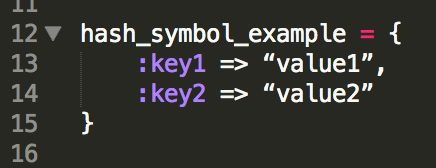
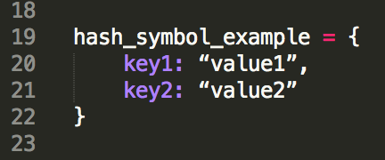
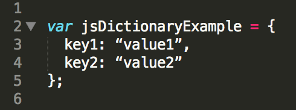

Hashes are a distinctly defined type of object in the Ruby programming language: the key/value pair. They are pretty easy to recognize, especially when they take the form of the hash literal, which uses what’s called a “hash rocket” to define the key/value pairs in the hash:
hash_literal_example = {
key1 => “value1”,
key2 => “value2”
}
This can also be done on a single line, following pretty much the same format:
hash_literal_example = { key1 => “value1”, key2 => “value2” }
If your key is a string, Ruby hashes allow for the use of symbols instead of strings, which makes the syntax of the hash a little bit more friendly on the eyes:
And you can move the colon to the right of the key, to perform the same function as the “hash rocket”:
In JavaScript, the classification of objects seems to be a little looser than in Ruby. Objects are defined using var, which stands for variable. Var is also used to define variables, and it can be used to define functions, so it’s a multi-purpose tool, not reserved for defining objects. And a JavaScript object has a pretty loose definition of form: it can be an array, a key/value pair, a variable, or a function. Rather than picking apart all the different variations of objects in JavaScript, we’re concerned with comparison between Ruby hashes and their JavaScript equivalent, which is sometimes referred to a dictionary, but the term does not seem to be as firmly defined and uniformly applied as the Ruby hash. The form of a JavaScript dictionary is pretty similar to a Ruby hash, especially when symbols with colons replace key strings:

Note the presence of the word var at the beginning. Besides this, it’s actually pretty much the same as the Ruby hash. Also note the semicolon after the end of the curly braces. JavaScript generally requires a semicolon at the end of the statement, but there are a bunch of qualifiers to that general rule, and I’m still too new to JavaScript to confidently talk about when they are or aren’t needed. My current mantra is to err on the side of caution (i.e., put them in).
Although the syntax for Ruby hashes and JavaScript dictionaries looks almost identical, the major difference that I’ve noticed is the fact that the Ruby hash is a discreet type of data structure, with its own properties and the large number of methods that are available to use with it. The JavaScript dictionary has the same basic idea, but it seems less developed than the Ruby hash, in the sense that it’s just one of several objects that are defined under the umbrella of “object”. I am still relatively new to JavaScript, however, and it’s definitely possible (read: likely) that I’m not understanding the full extent of its capabilities yet.